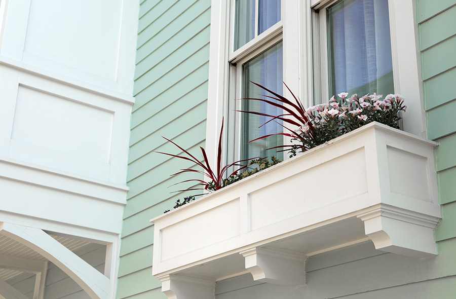

Why Hardie
James Hardie® fiber cement products combine beautiful design with high performance. Time and time again, we beat our competitors on both curb appeal and durability.
5
James Hardie has always been ahead of the siding industry curve. Technology advancements put James Hardie 5 generations ahead of generic fiber cement.
30
James Hardie Building Products invented fiber cement over 30 years ago.
100+
James Hardie has spent over $100MM in research and development, and continues to invest in product advancements.
#1
America's most popular brand of siding
James Hardie® Products vs. OSB
James Hardie fiber cement is specifically formulated to better resist damage from the very predators—moisture, freezing temperature, humidity, pests and fire—that pose threats to wood-based products.
Oriented Strand Board (OSB), also known as wood composite or engineered wood siding, consists of wood strands bonded together under heat and pressure with a resin. When used for exterior siding, it is susceptible to rotting from water damage.
The bottom edges of OSB can expand and split over time where exposed to cyclic wet and freezing conditions.
James Hardie® Products vs. Vinyl
 There are many reasons to choose James Hardie siding over vinyl, the first of which is appearance. James Hardie siding is over five times thicker than vinyl, allowing for deeper grooves and a more authentic wood-grain effect. The result is more elegant than vinyl (which is plastic), particularly on a historic home.
There are many reasons to choose James Hardie siding over vinyl, the first of which is appearance. James Hardie siding is over five times thicker than vinyl, allowing for deeper grooves and a more authentic wood-grain effect. The result is more elegant than vinyl (which is plastic), particularly on a historic home.
Shown above: James Hardie Select Cedarmill Siding.
 Then comes function. Vinyl melts easily in a fire (or even from the reflection of the sun off Low-E glass windows); James Hardie products are noncombustible. Vinyl may crack and warp from the elements; James Hardie products are more durable and resist warping, sagging and melting.
Then comes function. Vinyl melts easily in a fire (or even from the reflection of the sun off Low-E glass windows); James Hardie products are noncombustible. Vinyl may crack and warp from the elements; James Hardie products are more durable and resist warping, sagging and melting.
Shown above: Vinyl Siding
James Hardie® Products vs. Wood
James Hardie siding is not only less expensive than wood, it won’t be eaten by animals or insects. It also resists water absorption better than wood even where the manufacturer’s recommended protections are followed, helping protect against mold.
When there’s a fire, James Hardie siding is much better at withstanding damage, while wood goes up in flames.
Wood may split, crack and deteriorate over time, while James Hardie siding resists weather damage and keeps its shape for a much longer time, which means less maintenance to worry about year after year.
James Hardie® Products vs. CFC
 There are a few other competitive fiber cement (CFC) siding products available, but none compare to James Hardie in resisting water absorption, product stability, manufacturing consistency and uniformity, paint adhesion and warranty.
Our unrivaled investment in R&D and constant innovations in product design, manufacturing and distribution allow us to remain steps ahead of the competition. With support of our people, partners and exceptional warranties, we’re committed to protecting your customers’ homes while helping your business grow.
Contractor Alliance Program
The James Hardie Contractor Alliance™ combines marketing tools, lead generation support and training to help members grow and differentiate their business in the highly competitive siding market. The Contractor Alliance Program is an evolution of James Hardie's longstanding Preferred Remodeler Program and the Associate Contractor Program.
With five levels, the Contractor Alliance Program is designed for dedicated business owners of all sizes. James Hardie offers business resources including marketing materials, financing and business planning tools. Contractor Alliance Program members will also learn how to install the full James Hardie® product line through the First Board, First Nail Program and online training.
At the top levels, contractors receive one-on-one business planning with local James Hardie representatives, a manufacturer recommendation through a professional listing and priority placement on the James Hardie Contractor Locator, Contactor Alliance "Badges" based on design excellence, In the program, contractors also receive GuildQuality ranking, sales, training and membership longevity, HardieReward™ points for every James Hardie product purchased, which can be redeemed for HardieReward Program perks like jobsite tools, co-branded marketing, merchandise, trips, etc., and complete access to the new James Hardie Contractor Alliance Portal.